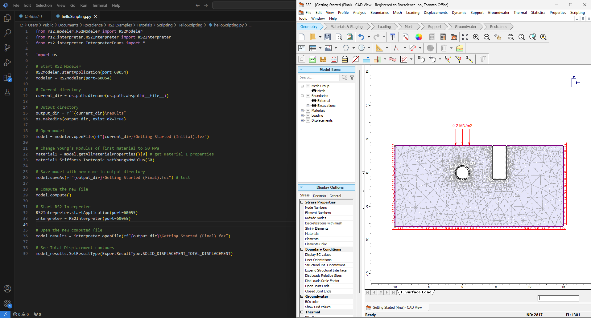

RS2 Scripting Reference Manual#
Version: 11.28.0
Prerequisites#
Before you begin, ensure you have the RS2 program installed. You must have at minimum Version 11.023 in order to use this feature.
Python Environment#
There are two methods to run a script, which differ in the Python environment used:
- Running on RocScript Editor
Comes pre-installed with RS2 and includes the RS2 Python API library
For all-level users
- Running on your own Python environment
Requires downloading the RS2 Python API library
For advanced users
Please refer to Getting Started with RS2 Python Scripting for more information.
Install RS2 Python API Library#
pip installation
pip install RS2Scripting
If you are not using the latest release of RS2, you need to specify a library version that matches your RS2 version. For example:
pip install "RS2Scripting==11.23.0"
RS2 Scripting Tutorials#
Please visit RS2 tutorial website for more detailed tutorials.

Table of Contents#
- rs2 package
- Python Script Examples
- Model Script Examples
- Modeler Script Examples
- Mesh Script Examples
- Unit Script Examples
- Stage Factors Script Examples
- Import Export Properties Script Examples
- Material Properties Script Examples
- Material Initial Condition Stage Factor Script Examples
- Material Stiffness Properties Script Examples
- Material Strength Properties Script Examples
- Material Properties Datum Script Examples
- Material Thermal Properties Script Examples
- Material Joint Script Examples
- Material Joint Stage Factor Script Examples
- Hydraulic Properties Script Examples
- Static Groundwater Script Examples
- FEA Groundwater Script Examples
- Hydraulic Distribution Functions Script Examples
- Bolt Script Examples
- Joint Script Examples
- Liner Script Examples
- Pile Script Examples
- Structural Interface Script Examples
- Composite Liner Script Examples
- Support Stage Factor Script Examples
- History Query Script Examples
- Time Query Script Examples
- Material Query Script Examples
- Bolt Result Script Examples
- Joint Result Script Examples
- Liner Result Script Examples
- Pile Result Script Examples
- Structural Interface Script Examples
- Composite Result Script Examples
- Extract Log File Script Examples
- Check Convergence Script Examples
- Bolt Spacing Study
- Statistical Analysis of Slope with Spatial Variability
- Webinar Recordings